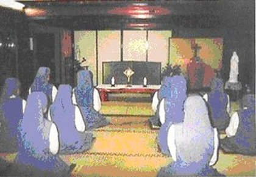
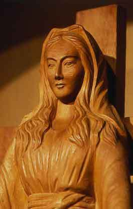
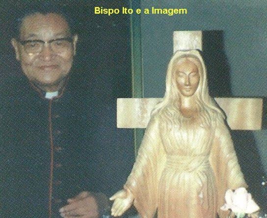
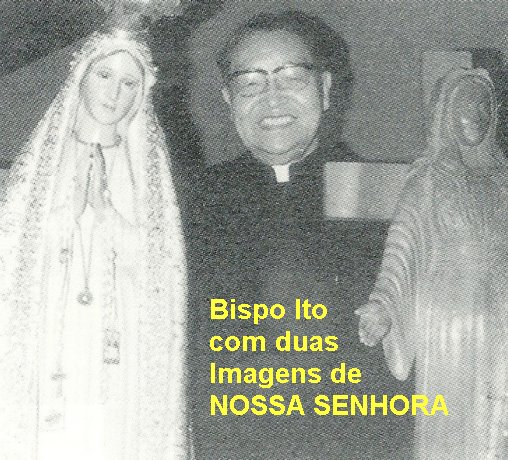
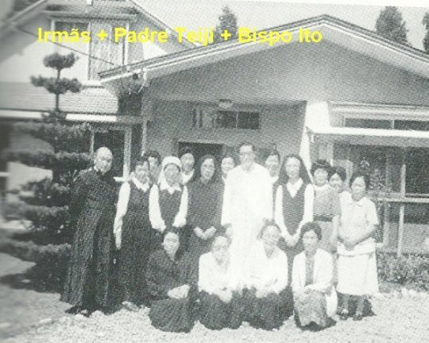
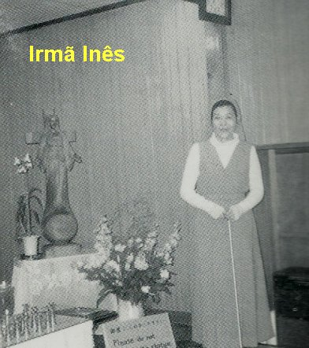

No dia 3 de Agosto de 1973 (primeira sexta-feira do mês), à tarde, durante a visita que ela fez ao SANTÍSSIMO SACRAMENTO, Irmã Inês meditou na Paixão de NOSSO SENHOR e depois começou a rezar o Terço, quando de repente, o seu Anjo da Guarda apareceu e participou com ela da reza do Terço. Assim que terminaram, o Anjo perguntou com um sorriso na face:
“Tens qualquer coisa para me perguntar? Vamos, não tenhas receio”.
Quando ela ia dizer uma palavra, subitamente, como da primeira vez, ouviu a voz que vinha da imagem da VIRGEM MARIA, inconfundível, suave e de indizível beleza:
“Minha filha, Minha noviça, amas o SENHOR? Se amas o SENHOR, escuta o que tenho a dizer-te. É muito importante. Transmiti-lo-á ao teu Superior. Muitos homens deste mundo afligem o SENHOR. Desejo almas que O consolem, que apaziguem a ira do PAI Celeste. Desejo com o Meu FILHO, almas que reparem com o seu sofrimento e a sua pobreza, os pecadores ingratos.
Para dar a conhecer ao mundo a sua ira, o PAI Celeste está prestes a infligir um grande castigo à humanidade inteira. Juntamente com o Meu FILHO, intervim muitas vezes para apaziguar a indignação do PAI. Impedi o advento de calamidades oferecendo-LHE os sofrimentos do Meu FILHO na Cruz, o Seu precioso Sangue, as almas bem-amadas que O consolam e formam a legião das almas vítimas. Oração, penitência e sacrifícios corajosos podem apaziguar a ira do PAI. Desejo-o também da tua Comunidade. Que ela ame a pobreza, se santifique e reze em reparação das ingratidões e dos ultrajes de tantos homens. Recitai a oração das Servas da Eucaristia tendo clara consciência do seu conteúdo; ponde-a em prática; ofereça tudo àquilo que DEUS vos enviar em reparação dos pecados. Que cada uma se esforce, segundo as suas capacidades e a sua posição, para se oferecer inteiramente ao SENHOR.
Mesmo numa Ordem Secular, a oração é necessária. As almas que querem rezar já estão se reunindo. “Sem vos prenderdes muito à forma, sede fiéis e fervorosas na oração para consolar o MESTRE”.
NOSSA SENHORA fez uma pequena pausa e depois continuou:
“O que estás pensando no teu coração é verdade? Estás verdadeiramente decidida a ser a pedra rejeitada? Minha noviça, tu que queres ser totalmente do SENHOR, emite os teus votos para seres uma esposa digna do Esposo, sabendo que tens de ser pregada na cruz com três cravos. Esses três cravos são a pobreza, a castidade e a obediência. Dos três, a obediência é o alicerce. Num total abandono, deixa-te conduzir pelo teu Superior. Ele saberá compreender-te e orientar-te”.
A Irmã Inês descreveu no seu Caderno “Diário de uma Alma”: “Era uma Voz de uma beleza maravilhosa, que só pode existir no Céu”.
ATAQUES DO DEMÔNIO
Dia 4 de Agosto, um acontecimento surpreendente. A Irmã Inês se apressava a entrar na Capela, para as orações do Ofício da noite, quando foi brutalmente agarrada por trás, no seu ombro, por uma mão forte que a impedia de andar. Sem poder falar, num gesto ligeiro levantou o braço para se defender e se livrar, mas não conseguiu, a mão que a segurava era pesada e forte. Olhou rapidamente para o lado e vislumbrou uma sombra grande que incidia sobre ela. Assustada e aflita implorou: “Ave Maria! Anjo da Guarda, acode-me”! O Anjo apareceu imediatamente e a sombra do maligno sumiu, podendo a Irmã Inês entrar tranquilamente na Capela.
Este foi o primeiro ataque do demônio, querendo impedir a Irmã Inês de exercitar as suas orações e suas obras de amor, piedade e misericórdia. Em outras ocasiões, que sucedeu a intervenção do maligno, ela também suplicou: “SENHOR, salvai-me, tende piedade”! E satanás desapareceu imediatamente.
LUZ RESPLANDECENTE, SUOR E PERFUME

Após o almoço no Convento, a Irmã Inês foi com uma companheira rezar o Terço diante do Altar. No início da quinta dezena, observou que a imagem de NOSSA SENHORA resplandeceu maravilhosamente com uma luz branca de grande luminosidade. Continuando a rezar, puxou o braço da companheira e então, as duas viram que era o vestido que mais resplandecia, e das duas mãos, emanava uma luz muito viva e deslumbrante. Terminado o Terço, aproximaram-se da imagem. Enquanto a Irmã Inês se prostrou no chão, a outra Irmã apontou para a mão da VIRGEM MARIA, dizendo: “Veja, a ferida desapareceu”!
O sangue correu pela última vez no dia 27 de Julho, quando cessou, a cicatriz da chaga continuou nítida. Agora, não se via mais nada, como se a cicatriz tivesse sido apagada.
Durante o Ofício da tarde aconteceu outro fato extraordinário: A imagem de NOSSA SENHORA ficou novamente resplandecente e toda a Comunidade presenciou. Uma das Irmãs que estava na primeira fila, avistou um líquido que escorria como suor, da testa e da face da VIRGEM MARIA. Irmã Inês que rezava de cabeça baixa, nada percebeu, mas sentindo subitamente alguém a seu lado, ergueu os olhos e viu o seu Anjo da Guarda que disse:
“Maria está ainda mais triste do que quando derramava sangue. Enxuga o suor”.
Ela se juntou as outras que trouxeram um pacote de algodão hidrófilo e todas elas, limparam o suor da imagem, com precaução e muita devoção. Todo o corpo estava molhado. Por mais que limpassem, um líquido semelhante a suor gorduroso escorria sem parar. Uma das Irmãs rezou com a voz embargada e o rosto banhado em lágrimas: “SANTA MARIA perdoai-nos por VOS causarmos tanta tristeza e dor. Pedimos perdão pelos nossos pecados e nossas faltas. Protegei-nos e ajudai-nos”! E cada uma ia limpando o local que tinham diante dos olhos, numa comum intenção de reparação e veneração.
Depois do jantar voltaram para ver a Imagem: estava novamente cheia de suor. E recomeçaram a enxugá-la. Neste momento, observaram que o suor tinha um perfume, e que agora, aquele odor já inundava toda a Capela, com um agradável cheiro de rosas, de violetas ou flor de lis. Foi uma alegria geral, nunca tinham sentido um odor tão maravilhoso, como aquele!
No domingo seguinte, entraram na Capela e sentiram aquele mesmo e agradabilíssimo odor. Aquele surpreendente e misterioso perfume permaneceu impregnando a Capela por muito tempo! Como diziam as Irmãs: tinham a impressão de estarem entrando no Paraíso Divino.
Dia 2 de Outubro, Festa dos Santos Anjos da Guarda, como era natural, a Irmã Inês estava muito alegre e feliz em poder homenagear especialmente, o seu Anjo da Guarda. Desde que deixara de ouvir, quantas vezes Ele apareceu para ajudá-la? Até lhe deu conselhos e encorajamento! Então, devia estar verdadeiramente contente com a oportunidade, para agradecer o seu precioso auxílio. E então aconteceu uma encantadora surpresa. Conta a Irmã Inês:
“Durante a Santa Missa das 6:30 horas da manhã, celebrada pelo senhor Bispo Ito, no momento da Consagração, uma luz fulgurante irrompeu subitamente da Hóstia Consagrada. Era a mesma que eu tinha visto em Junho e que tanto me impressionou. Tive a intuição de que esse adorável esplendor indicava a presença de NOSSO SENHOR JESUS CRISTO na Hóstia Consagrada. Comovida, no íntimo do meu coração repetia: Meu SENHOR e meu DEUS”!
“No mesmo instante, apareceram oito Anjos, ajoelhados em semicírculo ao redor do Altar, de costa para nós e em atitude de adoração, diante da Hóstia resplandecente no Altar. Oito Anjos da Guarda! Nós éramos sete Irmãs e mais o senhor Bispo Ito. Ali estavam os nossos Anjos da Guarda, seres celestes maravilhosos, sérios, compenetrados e fervorosamente amorosos. Não tem asas, como aparecem nas representações gráficas das publicações. No momento da Comunhão, os oito Anjos nos acompanharam, cada Anjo com sua Irmã. Esta linda cena me fez compreender claramente, o profundo significado do Anjo da Guarda, de nos guiar, proteger e velar o nosso quotidiano com doçura e afeição, e nos conduzir a DEUS”.
“Depois do jantar fiz o relato completo dos fatos ocorridos, ao senhor Bispo, o qual escreveu todos os detalhes num caderno”.
No dia 7 de Outubro, Festa de NOSSA SENHORA DO ROSÁRIO, Irmã Inês rezava fervorosamente o Terço, esforçando-se para rezá-lo de uma maneira mais amorosa e atenciosa, inundada que estava, pelo perfume muito agradável espalhado por toda Capela, e pensava consigo: “Seria tão bom se fosse assim durante todo o mês de Outubro”. O Anjo da Guarda apareceu e lhe disse que o perfume ficará somente até o dia 15 de Outubro. E de fato isto aconteceu, com uma observação, de que nos dias 3 (festa de Santa Teresinha do Menino Jesus) e no dia 15 (último dia), o perfume foi muito mais intenso e mais forte.
A TERCEIRA MENSAGEM DE NOSSA SENHORA
No dia 13 de
Outubro de 1973, sábado pela manhã, como de costume, após as Laudes seguiu-se um
tempo de adoração. Assim que 
Após o almoço, as companheiras têm trabalho na cidade e ela ficou tomando conta da Casa.
Então decidiu voltar a Capela e rezar um Terço. Ela descreve o fato que aconteceu:
“Peguei o Terço, ajoelhei-me e fiz o Sinal da Cruz. Logo aquela Voz da MÃE DE DEUS, de indizível beleza e suavidade, vinda da imagem ressoou nos meus ouvidos surdos. Prostrei-me no chão e concentrei toda a minha atenção nas palavras Dela”:
“Minha filha querida, escuta bem o que vou dizer-te. Informarás tudo ao teu Superior”.
“Como já te disse, se os homens não se arrependerem e emendarem, o PAI infligirá um castigo terrível à humanidade inteira. Será um castigo maior do que o dilúvio, como nunca houve anteriormente. Cairá fogo do Céu que aniquilará uma grande parte da humanidade, tanto os bons como os maus, não poupando sequer os Padres e os fiéis. Os sobreviventes ficarão numa tal desolação que invejarão os mortos. As únicas armas que vos restarão, serão o Rosário e o Sinal deixado pelo Meu FILHO. Recitem todos os dias as orações do Rosário. Com o Rosário, rezem pelo Papa, pelos Bispos e pelos Padres.
A ação do diabo infiltrar-se-á mesmo na Igreja, de maneira que se verão Cardeais oporem-se a Cardeais, Bispos a outros Bispos. Os Padres que me veneram serão desprezados e combatidos pelos seus confrades, as Igrejas e os Altares serão pilhados, a Igreja ficará cheia daqueles que aceitam compromissos e o demônio levará muitos Padres e almas consagradas, a abandonarem o serviço do SENHOR.
O demônio será especialmente implacável contra as almas consagradas a DEUS. A perspectiva da perda de numerosas almas é a causa da Minha tristeza. Se os pecados aumentarem em número e em gravidade, não haverá mais perdão para eles.
Diz corajosamente ao teu Superior. Ele saberá encorajar cada uma de vós a rezar e a praticar obras de reparação”.
NOSSA SENHORA fez uma pequena pausa e depois completou:
“Tens alguma coisa a perguntar? Hoje é a última vez que te falo de viva voz. Daqui em diante, obedecerás àquele que te for enviado e ao teu Superior. Reza muito as orações do Rosário. Sou a Única que posso ainda livrar-vos das calamidades que se aproximam. Aqueles que põem a confiança em Mim, serão salvos”.
“Estava tão emocionada, que minha voz ficou presa na garganta. Só pude dizer “sim”, prostrada com o rosto no chão. Disse a Irmã Inês.
Do mesmo modo como nas Aparições em Fátima, esta última Mensagem de NOSSA SENHORA aconteceu no dia 13 de Outubro. Este fato já nos leva a perceber que o SENHOR teve a intenção de mostrar que as Mensagens se completam.
No dia 15 de Outubro, Festa de Santa Teresa D’Ávila, conforme o Anjo da Guarda já tinha avisado a Irmã Inês, ao anoitecer, a imagem não mais transpirou, deixou de emanar aquele perfume sutil que nenhuma rosa da terra pode igualar.
A CURA ANUNCIADA PELO ANJO
Em Fevereiro de 1974, Padre Teiji Yasuda, visitou pela primeira vez o Convento das Irmãs Servas da Eucaristia, conhecidas pelo nome das Irmãs de Yuzawadai, lá no alto da colina, como diziam os habitantes locais, um lugar de acesso muito difícil, principalmente no inverno. Meses após, quando deixou a Paróquia onde trabalhava, em Tókio, aceitou o convite de Dom Ito, para ser o Capelão das Irmãs em Yuzawadai, e então para lá viajou. Assim que chegou, lembrou-se daquela informação sobre a Irmã Inês que lhe haviam descrito na primeira viagem, e agora retornando ao Convento, aumentou de maneira considerável a sua curiosidade e por isso, quis conhecer o Diário da Irmã Inês, com as anotações e o completo relato dos fatos que haviam acontecido, os quais deixam evidente a intervenção sobrenatural naquele recanto do Japão. Entretanto, depois de ler minuciosamente o Diário, percebeu a grandeza dos fatos e não quis se manifestar logo de início. Imaginou que seria mais prudente esperar sedimentar em seu coração a convicção sobre as impressionantes ocorrências, que revelavam a tristeza e o despontamento Divino, pelo deplorável comportamento da humanidade.
Na verdade, o que mais impressionou o Padre Teiji, foi o fato de a Irmã ter ouvido as mensagens de NOSSA SENHORA e do seu Anjo da Guarda, sendo ela declarada completamente surda. Segundo ele, só podiam ser “locuções interiores”, que nada tinham a ver com a faculdade física do ouvido!
A Irmã Inês explicou: “Não era o som de uma voz vulgar que ressoava aos meus ouvidos, como se eles tivessem sido provisoriamente curados. Era uma Voz que me vinha direta ao coração, não passando pelos meus ouvidos incapazes de ouvir”.
No dia 18 de Maio de 1974, depois da adoração Eucarística da manhã, a Irmã Inês que tinha acabado de receber a visita de seu Anjo da Guarda, foi ao encontro do Padre Teiji para lhe descrever o fato. O Anjo disse:
“Os teus ouvidos abrir-se-ão em Outubro; tu passarás a ouvir; tu ficarás curada. Mas isso durará apenas um tempo, pois o SENHOR deseja ainda esse seu sacrifício e assim, depois voltarás a ficar surda outra vez. Sentindo que os teus ouvidos ouvem novamente, o coração daqueles que ainda duvidam ficará sensibilizado e acreditarão nos acontecimentos. Tem confiança e reza com reta intenção. Descreve o que Eu te disse àquele que te dirige. Não digas a mais ninguém antes de acontecer”.
Todavia, ocorreu que no dia 8 de Agosto, quinta –feira, o Padre Teiji, de repente foi acometido de uma dor violenta no ventre, durante a Santa Missa, e com urgência foi transportado para o Hospital. Foi operado e ficou em convalescência até o dia 4 de Setembro, quando voltou para o Convento das Irmãs e reassumiu as suas funções.
Na manhã do dia 21 de Setembro, sábado, depois da meditação silenciosa, o Anjo apareceu e disse a Irmã Inês:
“Comece a rezar algumas Novenas, quantas desejar, duas e até três Novenas,
diante da SAGRADA EUCARISTÍA, suplicando a 
“Os teus ouvidos só ouvirão por algum tempo, não ficarão totalmente curados, voltarás a ficar surda. O SENHOR quer este seu sacrifício... Refere o que te disse àquele que te dirige”.
No dia 13 de Outubro de 1974, como das vezes anteriores, Padre Teiji expôs o SANTÍSSIMO SACRAMENTO e incensou o Altar. Ajoelhou no seu lugar e foi iniciada a reza do Terço. Depois cantaram a Ave Maria. No fim do cântico a Irmã Inês prostrou-se no chão e foi possível observar que ela chorava. Logo aconteceu a bênção com o SANTÍSSIMO, quando o Padre levanta a Custódia com JESUS SACRAMENTADO e faz o sinal da Cruz. Depois ajoelhado diante da SAGRADA HÓSTIA o Padre iniciou a reza das invocações de louvor ao SANTÍSSIMO SACRAMENTO. Terminado, voltou ao seu lugar. A Irmã Inês que estava atrás dele, pediu:
- “Padre, mande-nos cantar o Te Deum, cântico número 12”.
O Padre voltou-se rapidamente e perguntou:
- “Está ouvindo novamente”?
- “Sim, acabo de receber essa graça”, respondeu a Irmã Inês, sem precisar de olhar o movimento dos lábios do Padre.
O Padre Teiji, feliz e emocionado com o acontecimento, quis anunciar para o público presente.
Era domingo, além das Irmãs, sempre participavam das Santas Missas, diversos moradores da redondeza, com seus parentes e amigos. Então a Capela estava cheia e a comoção foi geral. Em cada face um sorriso de alegria e agradecimento ao SENHOR, era o testemunho evidente do Milagre acontecido.
Como já dissemos, a cura referida é provisória, o Anjo já havia anunciado esta realidade. A cura definitiva que acontecerá, conforme foi anunciada por NOSSA SENHORA, será mais tarde. O importante neste fato é que a cura irá colaborar efetivamente para dar credibilidade as Mensagens de NOSSA SENHORA e do Anjo da Guarda. A Irmã estava completamente surda e voltou a ouvir, com data marcada. Então se concretiza a manifestação do infinito Amor de DEUS, por todos nós. E isto foi muito bom, porque infelizmente, os que não crêem sempre trabalham colocando todas as dificuldades, para que a verdade não seja conhecida. Entretanto, diante de uma realidade inquestionável, como essa, a descrença será convidada a desaparecer como fumaça.



